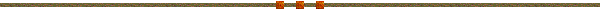

|
|
|
Top 20 Contenders For 2005 by Graded Earnings
Information Guideline:
CONTENDER/Graded Earnings/Best 2005 Beyer Breeding Dosage Profile/Dosage Index/Center of Distribution/Experimental Weight Comments  AFLEET ALEX (FL) $ 1,245,000 Best 2005 Beyer 108 Northern Afleet—Maggy Hawk, by Hawkster DP 5-0-9-0-0=14 DI 2.11 CD 0.71 Experimental: 124# Positives: Dam lacks Raise A Native and Northern Dancer. Negatives: Pedigree full of grass influences – Nureyev, Tentam, Silver Hawk, Hawaii – seems better suited to this surface. *La Troienne influence: Belle of Troy 7S
WILKO (KY) $ 1,004,515 Best 2005 Beyer 97 Awesome Again—Native Roots, by Indian Ridge DP 4-8-4-0-0=16 DI 7.00 CD 1.00 Experimental: 126# (co-highweight) Positives: Has shown toughness of bottom line to date. Negatives: Sire not particularly sound. Better suited to grass? *La Troienne influence: Bimelech 6S
HIGH FLY (KY) $ 796,500 Best 2005 Beyer 102 Atticus—Verbasle, by Slewpy DP 6-4-20-0-0=30 DI 2.00 CD 0.53 Experimental: None Positives: Slewpy looks to be a good broodmare sire, one of his daughters, Helice, already produced Prix de l’Arc de Triomphe winner Helissio. Negatives: Sire exiled to California *La Troienne influence: Bimelech 7D; Baby League 8Dx8D
BELLAMY ROAD (FL) $ 570,000 Best 2005 Beyer 120 Concerto—Hurry Home Hillary, by Deputed Testamony DP 5-9-8-4-0=26 DI 2.25 CD 0.58 Experimental: 110# Positives: According to Andy Beyer the 120 Beyer earned in the Wood Memorial (G1) was the best in a Derby prep since the numbers were created in 1991; better than the winning figure in any Triple Crown race during the same period, and better than any horse of any age has earned in the United States this year. Has a pedigree to go with his enormous Wood win – is inbred to three major Reine-de-Course families (x2 Somethingroyal/*Cinq A Sept; x3 *Clonaslee and x3 Friar’s Carse). Tail-female to Exclusive, from whence two-time Derby sire Exclusive Native descends. Phalaris/Non-Phalaris cross. Negatives: Only two starts prior to the Derby. *La Troienne influence: Businesslike 8D
BANDINI (KY) $ 525,000 Best 2005 Beyer 103 Fusaichi Pegasus—Divine Dixie, by Dixieland Band DP 14-4-14-0-0=32 DI 3.57 CD 1.00 Experimental: None Positives: Inbred x3 to Almahmoud, superior tail-female line of *Rough Shod II via Moccasin. Mr. Prospector/Seattle Slew cross placed awkwardly, but it is there. Negatives: Inbred to Raise A Native. *La Troienne influence: x3 in dam’s contribution via Baby League x2/Businesslike.
HIGH LIMIT (KY) $ 510,000 Best 2005 Beyer 105 Maria’s Mon—Known Romance, by Known Fact DP 3-3-8-0-0=14 DI 2.50 CD 0.64 Experimental: None Positives: Dam inbred to three-quarter siblings Known Fact and Tentam. Sire has already gotten a Derby winner in Monarchos. Negatives: Tail-female line could be more solid, though does contain Tim Tam’s old rival Lincoln Road, from the 1958 Derby. *La Troienne influence: Businesslike 6S; Bimelech 6S
FLOWER ALLEY (KY) $ 500,000 Best 2005 Beyer 95 Distorted Humor—Princess Olivia, by Lycius DP 10-2-14-2-2=30 DI 1.73 CD 0.53 Experimental: None Positives: Dam inbred to half siblings Lyphard and Dumfries – also the tail-female line. Sire has already gotten a Derby winner in Funny Cide. Negatives: Double Raise A Native plus Danzig and Reviewer does not make for soundness in a pedigree. *La Troienne influence: 8S
BUZZARDS BAY (FL) $ 480,000 Best 2005 Beyer 98 Marco Bay—Lifes Lass, by Seneca Jones DP 2-1-6-0-1=10 DI 1.50 CD 0.30 Experimental: None Positives: Very little to brag about in this pedigree. Negatives: Has been running in lesser company, sire is off the radar and has been exiled to Pennsylvania. They couldn’t give him away at the sales. *La Troienne influence: Belle of Troy 6S
SUN KING (KY) $ 402,500 Best 2005 Beyer 104 Charismatic—Clever But Costly, by Clever Trick DP 5-3-5-1-0=14 DI 3.00 CD 0.86 Experimental: 123# Positives: Sire line has strong classic history. Negatives: Dam cannot claim the same class as the sire, tail-female line a little shaky. *La Troienne influence: Busanda 6S
GREATER GOOD (KY) $ 391,344 Best 2005 Beyer 95 Intidab---Gather The Clan (IRE), by General Assembly DP 7-5-8-0-0=20 DI 4.00 CD 0.95 Experimental: 115# Positives: Linebreeding to Reine-de-Course *La Flambee, ancestress of many Belmont winners. Extremely consistent, hasn’t missed any training. Negatives: No visible flaws. *La Troienne influence: Baby League 6S
GREELEY’S GALAXY (KY) $ 300,000 Best 2005 Beyer 106 Mr. Greeley—Ascot Starre, by Ascot Knight DP 8-4-8-0-0=20 DI 4.00 CD 1.00 Experimental: None Note: Must pay late nomination fee to enter Kentucky Derby; if 20 other nominations enter he will be excluded (graded earnings do not count for a supplementary entry, so less than 20 must enter for him to be included) Positives: Nothing to write home about. Negatives: Unsound influences of Mr. Prospector, Reviewer, Danzig and Deputy Minister do not give one hope he’ll be around long. Tail-female line a bit shabby in recent years. *La Troienne influence: Bimelech 7D; Big Event 7D; Baby League 8D
COIN SILVER (FL) $ 201,500 Best 2005 Beyer 99 Anees--Beyond a Doubt, by Conquistador Cielo DP 7-3-11-1-2=24 DI 1.82 CD 0.50 Experimental: None
Positives: x3 Frizette via Princess Palatine/Frizeur
x2 and multliples of Man o’ War to Negatives: Sire extremely unsound, three lines of very unsound (four starts only) Raise a Native. *La Troienne influence: x3 via Unbridled (Bimelech x2/Businesslike). Third dam a half sister to Battle Joined, sire of Ack Ack.
NOBLE CAUSEWAY (KY) $ 190,000 Best 2005 Beyer 100 Giant’s Causeway—Mimi’s Golden Girl, by Seeking the Gold DP 6-2-11-0-1=20 DI 2.08 CD 0.60 Experimental: None Positives: Sire "one of the ones", and this is only his first crop. Inbred to half brothers Chieftain and Tom Rolfe. Solid but not brilliant female line. Negatives: Pedigree has grassy look with Storm Bird/Rahy/Roberto/Tom Rolfe and Round Table in the mix, might be better suited to that surface long-term. *La Troienne influence: Belle of Troy 8S; Businesslike 6Dx7D; Baby League 8D
GIACOMO (KY) $ 184,300 Best 2005 Beyer 98 Holy Bull—Set Them Free, by Stop The Music DP 5-5-6-0-0=16 DI 4.33 CD 0.94 Experimental: 122# Positives: Not many at this juncture – at least for classic success. Negatives: Keeps being close without winning – does he lack "killer instinct?" Tail-female line quite grassy, might move up on that surface. *La Troienne influence: Bimelech 6S; Big Event 6S
CLOSING ARGUMENT (FL) $ 165,000 Best 2005 Beyer 98 Successful Appeal—Mrs. Greeley, by Mr. Greeley DP 5-1-4-0-0=10 DI 4.00 CD 1.10 Experimental: 110# Positives: Four lines of Reine-de-Course Black Ray (Éclair x2/Jacopo/Sans Lumiere) Negatives: Lots of sprint blood from Valid Appeal and Groovy, inbreeding to Mr. Prospector plus Reviewer not very sound. *La Troienne influence: Two lines via Bimelech and Buinesslike plus a cross of *La Troienne’s three-quarter sister Adargatis via Cornish Prince.
SPANISH CHESTNUT (FL) $ 124,000 Best 2005 Beyer 93 Horse Chestnut (SAf)—Baby Rabbit, by No Sale George DP 8-2-6-2-0=18 DI 2.60 CD 0.89 Experimental: 104# Positives: Has “magic” double of Reine-de-Course Lalun via Bold Reason and Never Bend. Is linebred x6 to Frizette via Djeddah x2/Jet Jewel. First few dams very tough with 52, 31 and 35 starts respectively, but overall tail-female line (Shimmer) is a bit soft. Negatives: Sire hasn’t exactly set the world on fire, dam an awfully ordinary stakes winner. Is he really a rabbit? *La Troienne influence: Two crosses via Bimelech via Be Faithful x2.
ANDROMEDA’S HERO (KY) $ 115,000 Best 2005 Beyer 94 Fusaichi Pegasas—Marozia, by Storm Bird DP 12-4-18-0-0=34 DI 2.78 CD 0.82 Experimental: None Positives: Tail female to newly-appointed Reine-de-Course Mahubah. X3 to Almahmoud. Negatives: Soundness factor from sire, Storm Bird *La Troienne influence: None
SORT IT OUT (NY) $ 65,000 Best 2005 Beyer 96 Out of Place—Vex, by Kris S. DP 5-4-17-1-1=28 DI 1.67 CD 0.39 Experimental: None Positives: Second dam a full sister to Forty Niner, tail-female to Reine-de-Course Chelandry. Sire from tough sire line (Cox’s Ridge) and tail-female to Reine Exclusive. Overall pedigree sounder-looking than most. Negatives: Hasn’t been impressive this year, Baffert doesn’t seem enthused. *La Troienne influence: one cross via Buckpasser in sire.
DON’T GET MAD (KY) $ 60,000 Best 2005 Beyer 98 Stephen Got Even—Class On Class, by Jolie’s Halo DP 5-2-11-0-0=18 DI 2.27 CD 0.67 Experimental: None Positives: Many – he’s linebred to Frizette via Myrtlewood x2/Black Curl and has Somethingroyal x3 (Sir Gaylord x2/Secretariat). Tail-female to Reine-de-Course Fairy Gold. Young A. P. Indy sire is from the family of tough, consistent sire Lord Avie. Pedigree reads sounder than most – no Native Dancer in 6-cross. Negatives: Just what was that Santa Anita Derby really all about? Will the Derby Trial take too much out of him? *La Troienne influence: x4 via Baby League x2 in Seattle Slew, via Businesslike in Buckpasser and via Belle of Troy in Cohoes.
GOING WILD (KY) $ 56,750 Best 2005 Beyer 100 Golden Missile—Pola, by Strawberrt Road (AUS) DP 5-1-9-1-0=16 DI 1.91 CD 0.62 Experimental: None Positives: Sire is inbred to Reine-de-Course Imperatrice via Somethingroyal x2/Speedwell. Sire is inbred to three-quarter sisters Flower Bowl and Your Hostess, both Reines-de-Course. Is tail-female to *Boudoir II, a Reine-de-Course; third dam is the second dam of Derby and Preakness winner Real Quiet, fourth dam Gay Hostess is the dam of Derby and Preakness winner Majestic Prince. Negatives: Recent form, may be better suited to grass, double of *Forli a question for soundness. *La Troienne influence: x4, all via sire (Baby League x2/Businesslike/Bimelech)
|
|
Copyright © 2005, Ron & Ellen Parker. All Rights Reserved. |